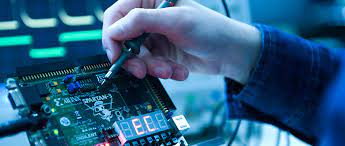

Ciência da Computação Bacharelado - UFC
A Computação é a ciência que se dedica à criação de programas e softwares para computadores capazes de solucionar problemas automaticamente. A partir da análise e identificação do problema, o cientista da computação programa a máquina para que ela resolva efetivamente a situação. O profissional precisa ser capaz de compreender o problema, pensar nas soluções e criar o programa que será usado. Além disso, precisa verificar se a solução elaborada por ele está correta e será útil.

Engenharia da Computação Bacharelado - UFC
Associar conhecimentos em eletrônica e programação de computadores é o que faz a Engenharia da Computação. A área de atuação dominante desses engenheiros é a elaboração e confecção de sistemas e componentes computacionais de produtos que possuam software e hardware embutido, os sistemas embarcados. Como exemplo, temos os aparelhos reprodutores de sons digitais, gravadores de vídeo digitais, sistemas de alarme, máquinas de raios X, aparelhos cirúrgicos etc.

Sistemas e Mídias Digitais Bacharelado - UFC
O profissional de Sistemas e Mídias Digitais atua no desenvolvimento de sistemas multimídia de forma bem diversificada: desde a área de sistemas tradicionais de computadores até jogos digitais. O diferencial do curso é a interação entre programação de sistemas digitais e comunicação baseadas e recursos multimídia. O objetivo é desenvolver sistemas para web e dispositivos móveis. Profissionais de Sistemas e Mídias Digitais são capazes, por exemplo, de desenvolver simuladores seja de tiro para treinamento de policiais, seja de cirurgias para estudantes de Medicina.